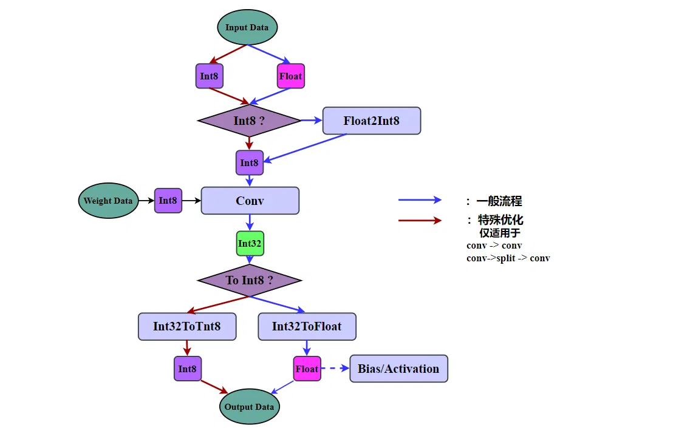
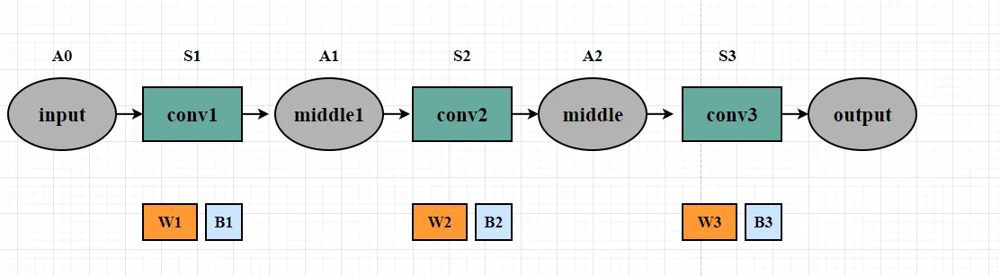
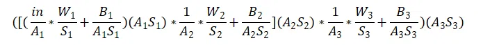
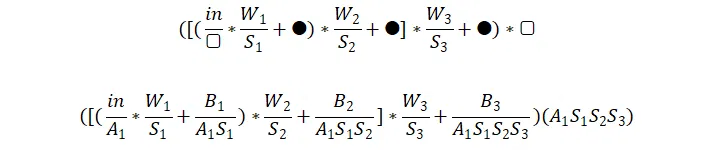
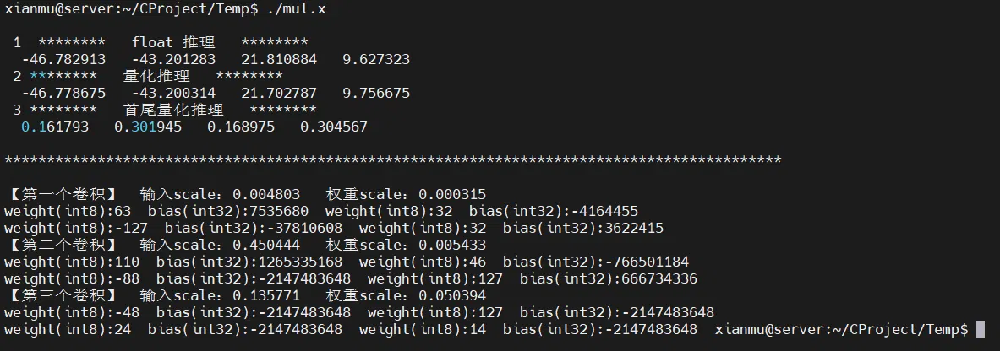

# 前言
本篇文章探讨一下连续卷积层首尾量化的可行性。连续卷积指的是神经网络模型中接连出现若干个卷积 layer，中间没有 pooling、FC 等其他 layer；首尾量化指的是只在首端量化，仅在尾端反量化，中间不添加量化反量化操作。探索连续卷积层首尾量化的可行性，目的是试图降低每一层都进行繁杂的量化反量化运算的时间消耗。在上一篇文章【推理引擎】NCNN 和 Tengine 量化推理逻辑对比 中提到了这个想法，本篇文章将通过公式演算和代码仿真的方式探索其可行性。
作为初学者，错误在所难免，还望不吝赐教。
# 连续卷积层首尾量化
借用上一篇文章【推理引擎】NCNN 和 Tengine 量化推理逻辑对比 中 NCNN 卷积量化计算流程图。流程显示：每一层卷积在计算前需要量化，在计算完成后需要反量化。

量化和反量化过程费时又费力，那么在连续卷积层的这种特殊情况下，能不能减少量化和反量化计算呢？
连续卷积指的是神经网络模型中接连出现若干个卷积 layer，中间没有 pooling、FC 等其他 layer；首尾量化指的是只在首端量化，仅在尾端反量化，中间不添加量化反量化操作。
假如这种做法可行，则可以减少中间层的量化、反量化计算。
# 公式演算
首先从公式上推理计算流程。
我们以三个连续的卷积层为例，下图是计算示意图。输入为 input ，经过三个卷积算子 conv1 、 conv2 、 conv3 得到输出 tensor output 。三个卷积算子的权重用 W* 表示，偏置用 B* 表示。
A 表示输入输出 tensor 的量化因子 scale， S 表示权重 weight 的量化因子。
暂不考虑通常会在卷积层后面出现的激活层。（relu 激活不影响后续推理，但其他激活函数大概不行）

# float 推理：
W 代表权重， B 代表偏置。 in 代表输入 tensor，这里 * 代表卷积操作。
上述公式便是一般情况下，连续计算三个卷积的流程。
# 量化推理：

将 float 推理流程改写为 NCNN 形式的量化流程。同时偏置的形式借鉴于 Tengine，也就是 int32 类型的 B/(A*S) 。
A 表示输入输出 tensor 的量化因子 scale， S 表示权重 weight 的量化因子。
in/A1 是将 float 的输入 tensor 量化为 int8， W1/S1 是将权重量化为 int8。输入 tensor 和权重的量化因子 A1 和 S1 确定后，偏置的量化因子和输出 tensor 的反量化因子就都确定了，是 A1*S1 。公式中 *(A1S1) 是反量化过程。
重复三次（量化、卷积、反量化），上述公式的结果等价于 float 推理。
# 首尾量化推理：
首尾量化公式整体是什么样子？全部写出来非常困难，所以我们可以先将其形式写出来，不确定的地方用符号代替。那么就是下方的第一个公式。公式中的方框代表量化因子，黑圈代表偏置，量化因子和偏置当前还没有确定。
流程是这样的： in/方框 进行量化。 *W1/S1+黑圈 表示执行一次卷积，连续执行三次卷积。最后 *方框 进行反量化。
这个公式只在首尾进行量化和反量化。
权重 W 的量化因子 S 是固定的，因为权重在模型中是固定的，其对应的量化因子 S 不会改变，于前述公式中相同。

接下来是填充方框和黑圈中的数据。填充结果为第二个公式。
填充规则首先是公式的等价性，公式要等价于 “量化推理” 和 “float 推理”。从前往后依次填充，结果如上，不再细讲。
直观来看，整个公式没有问题，理论上可行。难道真的可以节省连续卷积层中间的量化和反量化时间？马不停蹄开始代码仿真。
# 代码仿真
仿真代码如下所示：
#include"stdio.h" | |
#include"stdlib.h" | |
#include"math.h" | |
#include <string.h> | |
typedef struct conv_info{ | |
float weight[4]; | |
float bias[4]; | |
int weight_int8[4]; | |
int bias_int[4]; | |
float scale; | |
}conv_info; | |
typedef struct tensor_info{ | |
float data[4]; | |
int data_int8[4]; | |
float scale; | |
}tensor_info; | |
// tensor 初始化 | |
void init_tensor(struct tensor_info* tensor, float* data, int num){ | |
for(int i=0; i<num; i++){ | |
tensor->data[i] = data[i]; | |
} | |
} | |
// 卷积 初始化 | |
void init_conv(struct conv_info* conv, float* weight, float* bias, int num){ | |
for(int i=0; i<num; i++){ | |
conv->weight[i] = weight[i]; | |
conv->bias[i] = bias[i]; | |
} | |
} | |
// 卷积 计算量化因子 | |
void CalculateConvScale(struct conv_info* conv, int num){ | |
float abs_max=0; | |
float *data = conv->weight; | |
for(int i=0; i<num; i++){ | |
if(fabs(data[i])>abs_max){ | |
abs_max = fabs(data[i]); | |
} | |
} | |
conv->scale = abs_max/127.0; | |
for(int i=0; i<num; i++){ | |
int temp = round(data[i]/(conv->scale)); | |
conv->weight_int8[i] = temp; | |
} | |
} | |
// 卷积 计算 bias int8 | |
void ClaculateConvBiasInt8(struct conv_info* conv, struct tensor_info* tensor, int num){ | |
for(int i=0; i<num; i++){ | |
int temp = round(conv->bias[i]/(conv->scale*tensor->scale)); | |
conv->bias_int[i] = temp; | |
} | |
} | |
// tensor 计算量化因子 | |
void CalculateTensorScale(struct tensor_info* tensor, int num){ | |
float abs_max=0; | |
float *data = tensor->data; | |
for(int i=0; i<num; i++){ | |
if(fabs(data[i])>abs_max){ | |
abs_max = fabs(data[i]); | |
} | |
} | |
tensor->scale = abs_max/127.0; | |
} | |
// 卷积运算 float | |
void ConvFloat(struct tensor_info* input, struct conv_info* conv, struct tensor_info* output, int num){ | |
for(int i=0; i<num; i++){ | |
output->data[i] = input->data[i]*conv->weight[i]+conv->bias[i]; | |
} | |
} | |
// 卷积运算 int | |
void ConvInt(struct tensor_info* input, struct conv_info* conv, struct tensor_info* output, int num){ | |
for(int i=0; i<num; i++){ | |
// 量化 | |
int input_int8 = round(input->data[i] / input->scale); | |
// 卷积 | |
int out_int8 = input_int8 * conv->weight_int8[i]; | |
// 偏置 | |
int out_bias_int8 = out_int8 + conv->bias_int[i]; | |
// 反量化 | |
output->data[i] = out_bias_int8 * input->scale * conv->scale; | |
} | |
} | |
// 首尾量化 更新 bias | |
void updateBiasInt8(struct conv_info* conv, float scale, int num){ | |
for(int i=0; i<num; i++){ | |
int temp = round(conv->bias[i]/scale); | |
conv->bias_int[i] = temp; | |
} | |
} | |
// 卷积运算 首尾 | |
void ConvFrontTial(struct tensor_info* input, struct conv_info* conv1, struct conv_info* conv2, struct conv_info* conv3, | |
struct tensor_info* output, int num){ | |
for(int i=0; i<num; i++){ | |
// 初次量化 | |
int input_int = round(input->data[i] / input->scale); | |
// 第一步卷积 | |
int input_int_1 = input_int * conv1->weight_int8[i] + conv1->bias_int[i]; | |
// 第二步卷积 | |
int input_int_2 = input_int_1 * conv2->weight_int8[i] + conv2->bias_int[i]; | |
// 第三步卷积 | |
int input_int_3 = input_int_2 * conv3->weight_int8[i] + conv3->bias_int[i]; | |
// 反量化 | |
output->data[i] = input_int_3 * input->scale * conv1->scale * conv2->scale * conv3->scale; | |
} | |
} | |
int main(){ | |
// ********************************* 基本信息及初始化 ************************************ | |
tensor_info* input = (tensor_info*) malloc(sizeof(tensor_info)); | |
float input_data[4] = {0.24, -0.08, 0.16, -0.61}; | |
init_tensor(input, input_data, 4); | |
conv_info* conv1 = (conv_info*) malloc(sizeof(conv_info)); | |
float weight_data1[4] = {0.02, 0.01, -0.04, 0.01} ; | |
float bias1[4] = {11.4, -6.3, -57.2, 5.48}; | |
init_conv(conv1, weight_data1, bias1, 4); | |
conv_info* conv2 = (conv_info*) malloc(sizeof(conv_info)); | |
float weight_data2[4] = {0.6, 0.25, -0.48, 0.69} ; | |
float bias2[4] = {10.4, -6.3, -31.2, 5.48}; | |
init_conv(conv2, weight_data2, bias2, 4); | |
conv_info* conv3 = (conv_info*) malloc(sizeof(conv_info)); | |
float weight_data3[4] = {-2.4, 6.4, 1.2, 0.69} ; | |
float bias3[4] = {-5.4, 7.2, 26.3, 3.24}; | |
init_conv(conv3, weight_data3, bias3, 4); | |
// ********************************* float 推理 ************************************ | |
printf("\n 1 ******** float 推理 ******** \n"); | |
tensor_info* middle1 = (tensor_info*) malloc(sizeof(tensor_info)); | |
tensor_info* middle2 = (tensor_info*) malloc(sizeof(tensor_info)); | |
tensor_info* output_res = (tensor_info*) malloc(sizeof(tensor_info)); | |
ConvFloat(input, conv1, middle1, 4); | |
ConvFloat(middle1, conv2, middle2, 4); | |
ConvFloat(middle2, conv3, output_res, 4); | |
for(int i=0; i<4; i++){ | |
printf(" %f ", output_res->data[i]); | |
} | |
// ********************************* 量化推理 ************************************ | |
printf("\n 2 ******** 量化推理 ******** \n"); | |
CalculateConvScale(conv1, 4); | |
CalculateConvScale(conv2, 4); | |
CalculateConvScale(conv3, 4); | |
CalculateTensorScale(input, 4); | |
CalculateTensorScale(middle1, 4); | |
CalculateTensorScale(middle2, 4); | |
ClaculateConvBiasInt8(conv1, input, 4); | |
ClaculateConvBiasInt8(conv2, middle1, 4); | |
ClaculateConvBiasInt8(conv3, middle2, 4); | |
ConvInt(input, conv1, middle1, 4); | |
ConvInt(middle1, conv2, middle2, 4); | |
ConvInt(middle2, conv3, output_res, 4); | |
for(int i=0; i<4; i++){ | |
printf(" %f ", output_res->data[i]); | |
} | |
// ********************************* 量化推理 ************************************ | |
printf("\n 3 ******** 首尾量化推理 ******** \n"); | |
updateBiasInt8(conv1, input->scale*conv1->scale, 4); | |
updateBiasInt8(conv2, input->scale*conv1->scale*conv2->scale, 4); | |
updateBiasInt8(conv3, input->scale*conv1->scale*conv2->scale*conv3->scale, 4); | |
ConvFrontTial(input, conv1, conv2, conv3, output_res, 4); | |
for(int i=0; i<4; i++){ | |
printf(" %f ", output_res->data[i]); | |
} | |
// 信息打印 | |
printf("\n【第一个卷积】 输入scale：%f 权重scale：%f \n", input->scale, conv1->scale); | |
for(int i=0; i<4; i++){ | |
printf("weight_scaled(int8):%d bias_scaled(int32):%d ",conv1->weight_int8[i], conv1->bias_int[i]); | |
} | |
printf("\n【第二个卷积】 输入scale：%f 权重scale：%f \n", middle1->scale, conv2->scale); | |
for(int i=0; i<4; i++){ | |
printf("weight_scaled(int8):%d bias_scaled(int32):%d ",conv2->weight_int8[i], conv2->bias_int[i]); | |
} | |
printf("\n【第三个卷积】 输入scale：%f 权重scale：%f \n", middle2->scale, conv3->scale); | |
for(int i=0; i<4; i++){ | |
printf("weight_scaled(int8):%d bias_scaled(int32):%d ",conv3->weight_int8[i], conv3->bias_int[i]); | |
} | |
return 0; | |
} |
仿真包含 float 推理、量化推理、首尾量化推理三部分。
卷积运算简化为乘运算 input->data[i]*conv->weight[i]+conv->bias[i]; ，这种简化不影响结果判断。
输入 tensor 和权重 tensor 均简化为一个长度为 4 的向量。同样不影响结果判断。
代码中给出了三种推理方式的计算流程。

分别打印三种推理方式的计算结果，如上图所示
。
首先是 float 推理的结果，一行四个数分别是 -46.782913 -43.201283 21.810884 9.627323 ，可以作为正确与否的评判标准。
量化推理的结果位于第二行，与 float 推理结果相同，证明量化推理没有问题。
惊讶地发现首尾量化推理的结果出错？公式演算和算法仿真都没有问题，那么结果为什么不对呢？
打印一下首尾量化推理的相关数据：
量化后的 int8 类型的权重 weight 都没有问题，范围在 - 127 到 127 之间。
但是量化后的 int32 类型的 bias 为什么这么大？想来 bias 确实很大，量化因子普遍在 10E-3，因此第一个卷积的量化 bias ( B1/(A1S1) ) 已经达到 10 的六次方级别，第二个卷积的时候部分量化偏置出现溢出，第三个卷积的量化偏置已经普遍溢出。上图中打印的数字也证明了这一点： -214748364 这个数据已经溢出。
# 总结
连续卷积层首尾量化不具有可行性，因为连两层卷积都会出现偏置溢出现象，导致结果计算错误。
那么
-
- 将偏置 bias 改用 int64 存储？偏置大小呈指数上升，int64 也无法保证三层卷积首尾量化不溢出，收益不高。
-
- 将偏置 bias 改用 float 保存？ 浮点数无法精确的表示很大的整数。
总之，连续首尾量化无法实用。
# 后记
本博客目前以及可预期的将来都不会支持评论功能。各位大侠如若有指教和问题，可以在我的 github 项目 或随便一个项目下提出 issue，并指明哪一篇博客，我看到一定及时回复！